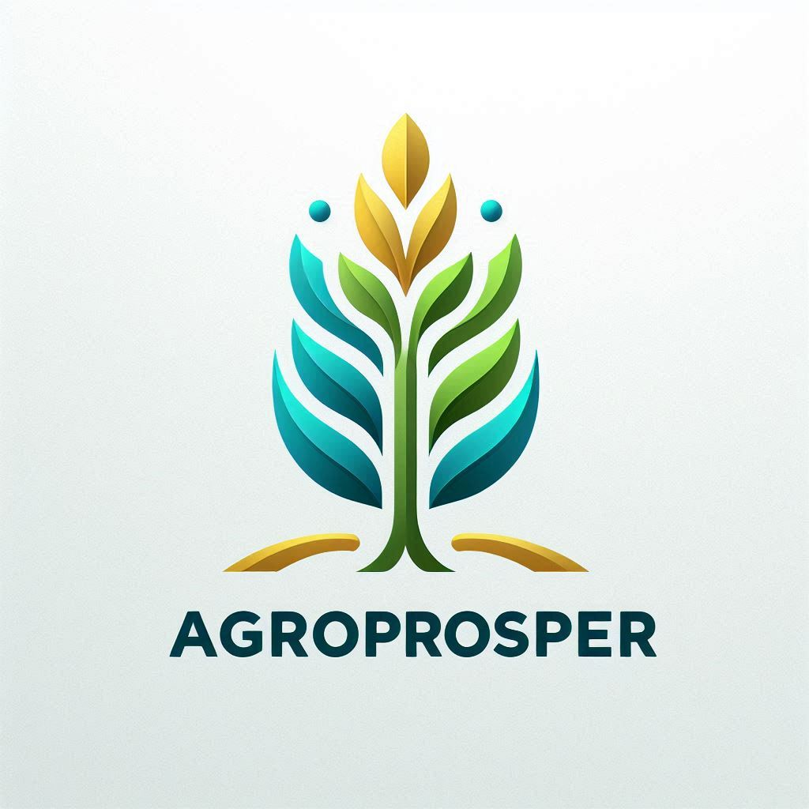

🎫 Вхід як гість
Ви отримаєте тимчасовий CID для перегляду контенту, участі в презентаціях та дослідження DAO.
📲 Скануйте QR-код, щоб увійти без реєстрації
Ви отримаєте тимчасовий CID для перегляду контенту, участі в презентаціях та дослідження DAO.
📲 Скануйте QR-код, щоб увійти без реєстрації